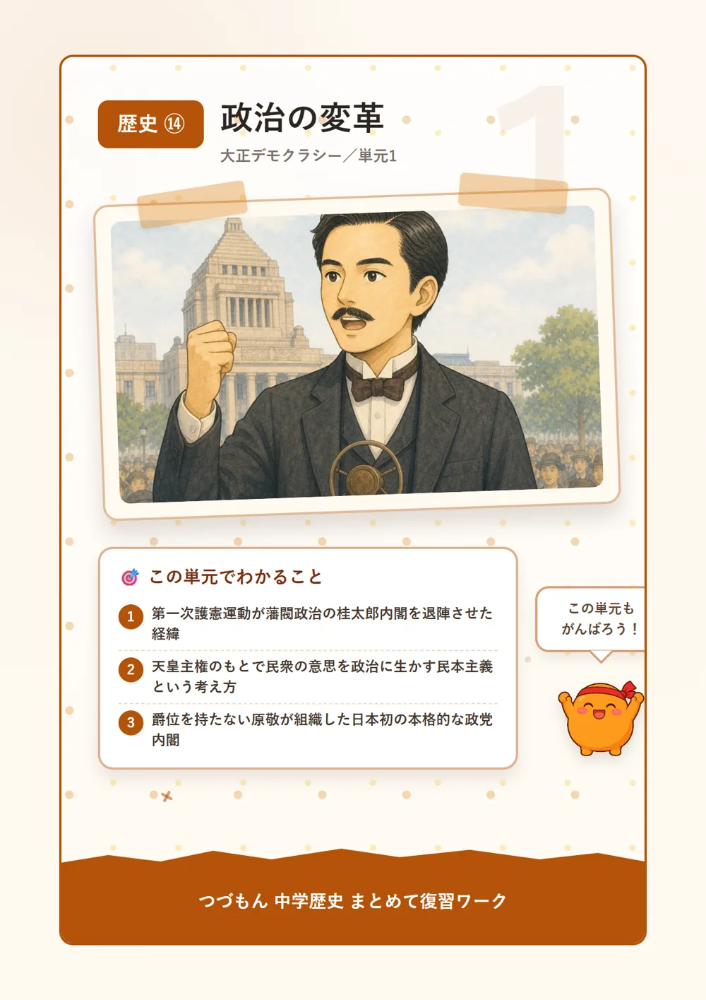
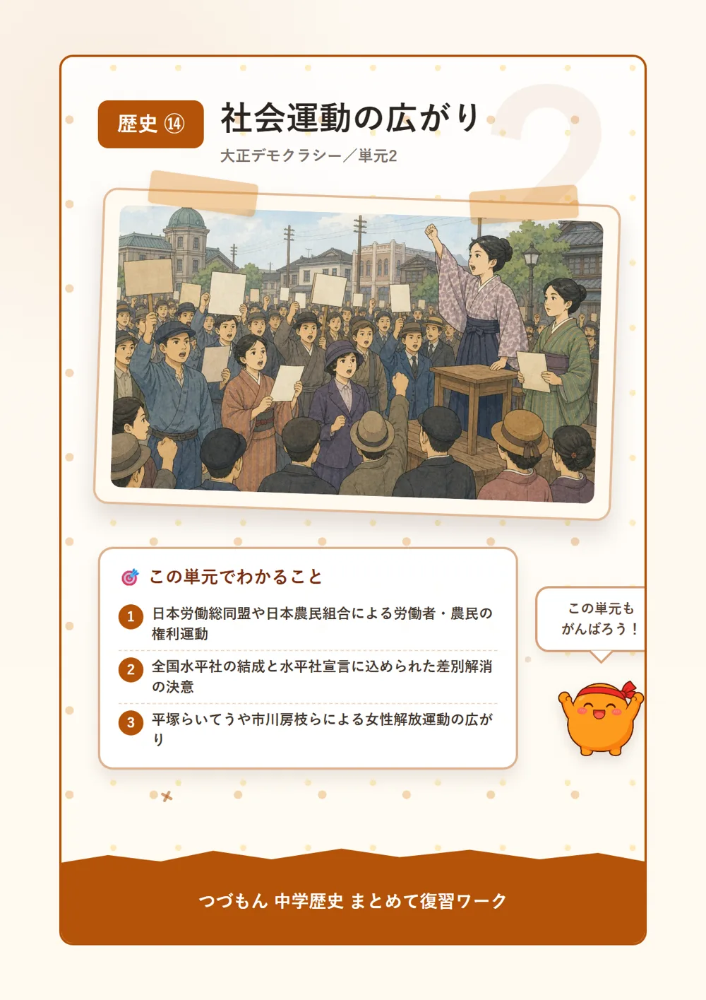
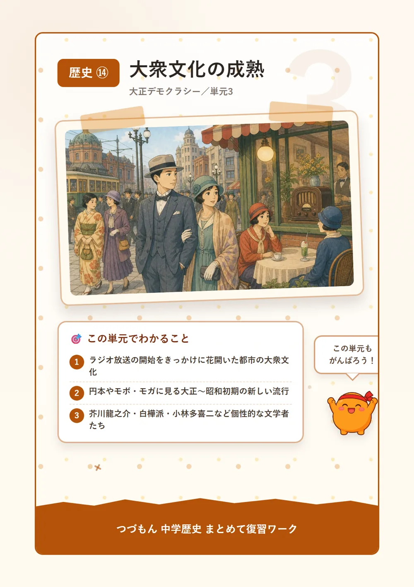

大正デモクラシー
 いっしょに
いっしょに読もう！
政治の変革

1第一次護憲運動と大正デモクラシー
大正時代に入ると、「もっと国民の声を政治に生かしてほしい」という気運、つまり大正デモクラシーが日本中に広がっていったんだ。1912年から13年にかけて、尾崎行雄や犬養毅たちが「閥族打破・憲政擁護」を合言葉にした第一次護憲運動を起こしたのを知ってる?この運動、なんと藩閥政治の象徴だった第3次桂太郎内閣を退陣に追い込むほどの力を持っていたんだよ。一部の人たちだけで決めていた政治のあり方に、国民が「それはおかしい」と声を上げた、大きな一歩だったんだね。
2吉野作造の民本主義
この大正デモクラシーの流れを理論の面から支えたのが、東京帝大教授の吉野作造なんだ。彼が唱えたのが民本主義という考え方。「主権は国民にある」とまでは言わなかったけど、「天皇が主権を持つ今の仕組みのままでも、政治にはできるだけ民衆の意思を反映させるべきだ」と説いたんだよ。少し控えめに聞こえるかもしれないけど、当時としてはとても新しい発想で、多くの人々に影響を与えたんだ。
3原敬内閣と「平民宰相」
1918年、米の値段が急に上がって人々の生活が苦しくなり、全国で米騒動が起きたんだ。この混乱で当時の内閣が退陣し、代わって立憲政友会の総裁原敬が内閣を組織したよ。原敬は華族の爵位を持たない衆議院議員だったことから、「平民宰相」と親しみを込めて呼ばれたんだ。すごいのは、この内閣がほとんどの大臣を政党員で固めた、日本で初めての本格的な政党内閣だったこと。政治が少しずつ、庶民に近づいていったのが分かるよね。
4普通選挙法と治安維持法
1925年、加藤高明内閣のもとで大きな法律が2つ同時に生まれたんだ。ひとつは普通選挙法。これまであった納税額による制限がなくなり、25歳以上の男子なら誰でも選挙権を持てるようになったんだよ。でも同じ年、社会主義など国の仕組みを変えようとする考えを取り締まる治安維持法も制定されたんだ。政治参加の扉が大きく開かれた一方で、思想の自由には厳しい制限がかけられた——光と影が同時にやってきた年だったんだね。ちなみに女性にはまだ選挙権は与えられなかったよ。

社会運動の広がり

1労働運動と農民運動
工場で働く人が増えた大正時代、労働条件の改善を求める労働運動が各地で広がり、1921年には全国組織の日本労働総同盟がまとまったんだ。農村でも、小作料の引き下げを求める動きが強まり、1922年には賀川豊彦らが日本農民組合を結成したよ。地主に小作料の値下げを求める争い、つまり小作争議を全国で主導したんだ。働く人たちが「もっと生活を良くしたい」と、自分たちの力で立ち上がり始めた時代だったんだね。
2全国水平社と差別への抵抗
長い間、被差別部落出身という理由だけで不当な差別を受けてきた人たちがいたんだ。1922年、その人たちが京都に集まり、全国水平社を結成したよ。結成大会で発表された水平社宣言は、「人の世に熱あれ、人間に光あれ」という有名な言葉で結ばれていて、誰かに差別をなくしてもらうのを待つのではなく、自分たちの手で差別をなくそうという強い決意が込められているんだ。すごい覚悟だと思わない?
3女性解放運動の広がり
「もともと女性は太陽だった」——1911年、平塚らいてうはこんな言葉とともに女性誌「青鞜」を創刊し、女性の解放を訴えたんだ。1920年には市川房枝らとともに新婦人協会を結成し、女性が政治集会に参加することを禁じていた治安警察法第5条の改正を求めたよ。今では当たり前に思えることも、当時は法律で禁じられていたんだね。少しずつだけど、女性が声を上げられる場所が広がっていったんだ。
4関東大震災という試練
1923年9月1日、関東大震災が関東地方を襲い、死者・行方不明者は10万人を超える大きな被害となったんだ。この混乱の中で、「朝鮮人が井戸に毒を入れた」といった根も葉もないデマが広まり、自警団によって多くの朝鮮人や中国人が命を奪われるという悲しい事件も起きてしまった。大きな災害のあとには、こうしたデマや差別が広がりやすいということを、私たちは歴史から学ばないといけないよね。
大衆文化の成熟

1ラジオ放送と大衆文化の広がり
1925年、東京・大阪・名古屋でラジオ放送が始まったんだ。これは後の日本放送協会、つまりNHKへとつながっていくよ。新聞や雑誌、映画なども広く普及して、都市に暮らす一般の人々に親しまれる大衆文化が花開いた時代だったんだ。大正期には音のない無声映画が大人気になり、昭和の初めには音声付きのトーキーへと進化していったよ。家庭にいながら世の中の情報や娯楽を楽しめるようになった、大きな転換点だったんだね。
2円本とモボ・モガ
1926年、改造社という出版社が1冊1円という安さで文学全集を売り出したんだ。これが「円本」と呼ばれ、それまで高価だった本を庶民も気軽に買えるようになり、読書がぐっと身近になったんだよ。また、洋装に身を包んで銀座の街を闊歩する若者たちは「モボ・モガ」(モダンボーイ・モダンガール)と呼ばれ、新しい流行の象徴になったんだ。都市を中心に、和と洋が入り混じった文化住宅も広まっていったよ。
3個性豊かな文学者たち
この時代、個性的な作家たちが次々と作品を発表したんだ。芥川龍之介は「羅生門」「鼻」といった短編で人間の心の奥深さを鋭く描き出したよ。武者小路実篤や志賀直哉ら白樺派は、人間らしさや理想を大切にする作品を発表したんだ。そして1929年、小林多喜二は「蟹工船」という作品で、過酷な労働環境に苦しむ労働者の姿を描き、プロレタリア文学の代表作となったんだよ。同じ時代でも、書く人によって全然違うテーマに向き合っていたんだね。